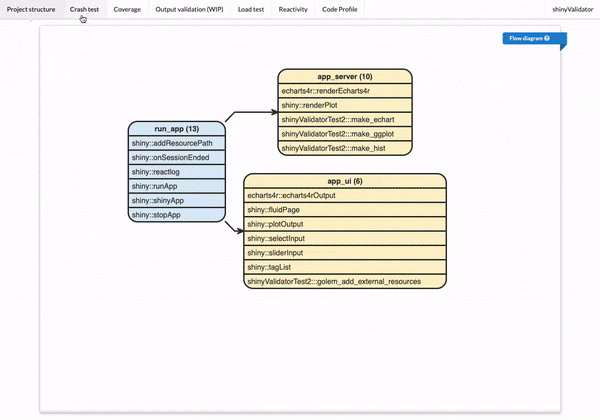

Purpose

{shinyValidator} aims at automating the audit of a Shiny App project’s quality, particularly required during a validation/qualification process. There are many different tools available to validate Shiny apps but, to the best of our knowledge, nothing has been made to get a global overview in a centralized report.
By default, {shinyValidator}:
- Lints the code to ensure consistency and quality.
- Runs a
devtools::check()to assess package quality. - Checks whether the Shiny app starts and is alive after heavy usage (requires headless browser solutions like shinytest2).
- Performs output comparison between commits (plot, htmlwidget).
- Launches a load test to measure app performance and identify bottlenecks (user concurrency, …) with shinyloadtest.
- Records an overall code profiling with profvis.
- Audits reactivity with reactlog.
- Provides overview of project structure with flow.
Another goal of {shinyValidator} is to promote testing and automation (CI/CD) to deliver better Shiny apps in production.
Installation
You can install the preview version of {shinyValidator} with:
remotes::install_github("Novartis/shinyValidator")Licence
Copyright 2022 Novartis AG
Licensed under the Apache License, Version 2.0 (the “License”); you may not use this file except in compliance with the License. You may obtain a copy of the License at
http://www.apache.org/licenses/LICENSE-2.0
Unless required by applicable law or agreed to in writing, software distributed under the License is distributed on an “AS IS” BASIS, WITHOUT WARRANTIES OR CONDITIONS OF ANY KIND, either express or implied. See the License for the specific language governing permissions and limitations under the License.